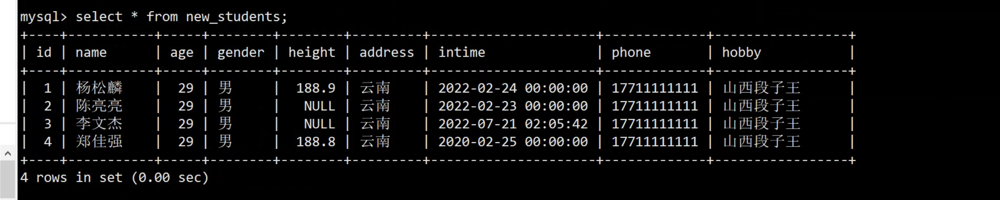
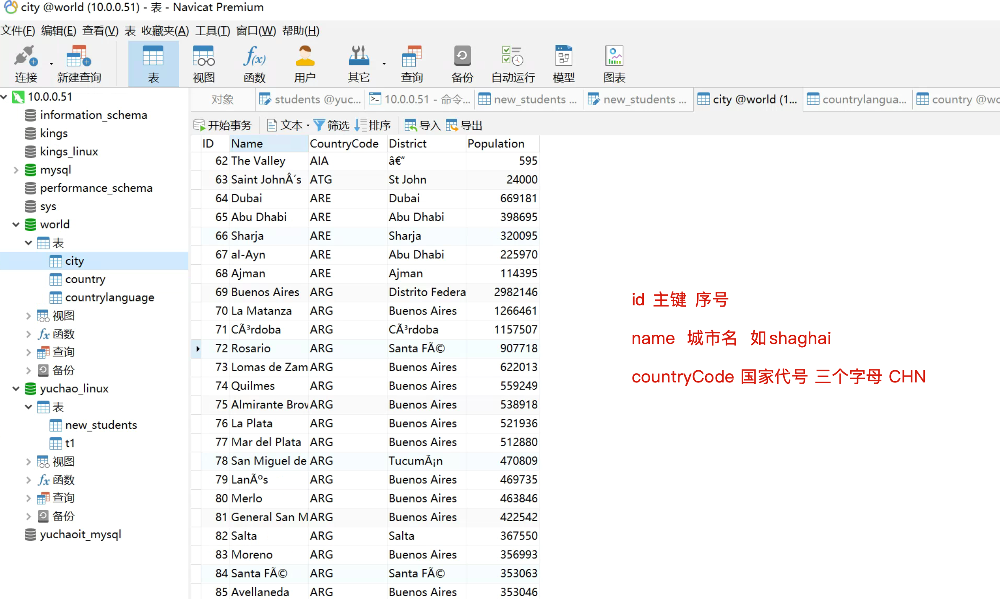
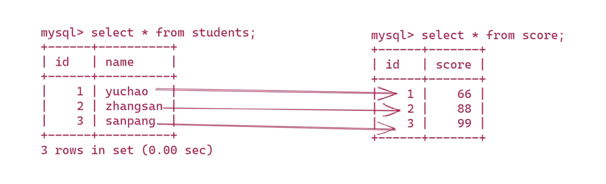
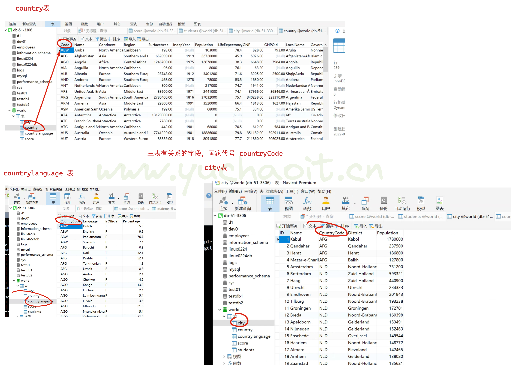

02-5-SQL语句二
DML数据操作语言
开发要重点掌握的SQL，运维熟悉就好，也就是DML数据操作语言，因为网站有各式各样的数据写入、数据读取操作，这是开发对于表的设计，是开发必须重点掌握的技能。
运维无须像开发一样，了解各种业务表的结构、设计，只需要熟悉查询数据操作。
也就是DML语句
- select
- insert
- delete
- update
mysql> ? Data Manipulation
You asked for help about help category: "Data Manipulation"
For more information, type 'help <item>', where <item> is one of the following
topics:
CALL
DELETE
DO
DUAL
HANDLER
INSERT
INSERT DELAYED
INSERT SELECT
JOIN
LOAD DATA
LOAD XML
REPLACE
SELECT
UNION
UPDATE
1.insert插入数据
前面的DDL语句，我们只是在定义，修改数据库，数据表的结构，属性，还没数据。
DML篇来插入数据
先看看表字段
先看看表字段
mysql> desc new_students;
mysql> desc new_students;
+---------+-------------------------------------------+------+-----+---------+----------------+
| Field | Type | Null | Key | Default | Extra |
+---------+-------------------------------------------+------+-----+---------+----------------+
| id | int(11) | NO | PRI | NULL | auto_increment |
| name | varchar(64) | NO | | NULL | |
| age | tinyint(3) | NO | | 0 | |
| gender | enum('男','女') | NO | | NULL | |
| height | float(4,1) | YES | | NULL | |
| address | enum('北京','深圳','云南','江苏') | NO | | NULL | |
| intime | datetime | NO | | NULL | |
| phone | char(11) | NO | | NULL | |
| hobby | char(20) | NO | | 学习 | |
+---------+-------------------------------------------+------+-----+---------+----------------+
9 rows in set (0.00 sec)
完整字段插入数据
插入学生数据，要指定字段，然后插入数值
insert into new_students(id,name,age,GENDER,HEIGHT,address,intime,phone,hobby) values(1,'杨松麟',22,'男','188.9','北京','2022-2-24','666666','说段子')
查数据
mysql> select * from new_students;
+----+-----------+-----+--------+--------+---------+---------------------+--------+-----------+
| id | name | age | gender | height | address | intime | phone | hobby |
+----+-----------+-----+--------+--------+---------+---------------------+--------+-----------+
| 1 | 杨松麟 | 22 | 男 | 188.9 | 北京 | 2022-02-24 00:00:00 | 666666 | 说段子 |
+----+-----------+-----+--------+--------+---------+---------------------+--------+-----------+
1 row in set (0.00 sec)
插入部分字段
没写的字段，会填入默认值
- datetime没有默认值，必须传入
id字段一般可以不写，会自动的增长+1
确保插入的字段，和值的顺序，是对应上的就行
- char长度不能超出，否则报错，可以修改配置文件解决该问题
插入数据
insert into new_students(name,phone,age,intime) value("陈亮亮","123456789",21,"2022-2-23");
检查
mysql>
mysql> select * from new_students;
+----+-----------+-----+--------+--------+---------+---------------------+-----------+-----------+
| id | name | age | gender | height | address | intime | phone | hobby |
+----+-----------+-----+--------+--------+---------+---------------------+-----------+-----------+
| 1 | 杨松麟 | 22 | 男 | 188.9 | 北京 | 2022-02-24 00:00:00 | 666666 | 说段子 |
| 2 | 陈亮亮 | 21 | 男 | NULL | 北京 | 2022-02-23 00:00:00 | 123456789 | 学习 |
+----+-----------+-----+--------+--------+---------+---------------------+-----------+-----------+
2 rows in set (0.00 sec)
修改datetime字段的默认值
数据库常见做法是，如用户信息录入，以当前系统时间插入即可。
mysql> alter table new_students modify intime datetime not null default now() comment '用户添加的时间';
Query OK, 0 rows affected (0.01 sec)
Records: 0 Duplicates: 0 Warnings: 0
当前表结构
mysql> desc new_students;
+---------+-------------------------------------------+------+-----+-------------------+----------------+
| Field | Type | Null | Key | Default | Extra |
+---------+-------------------------------------------+------+-----+-------------------+----------------+
| id | int(11) | NO | PRI | NULL | auto_increment |
| name | varchar(64) | NO | | NULL | |
| age | tinyint(3) | NO | | 0 | |
| gender | enum('男','女') | NO | | NULL | |
| height | float(4,1) | YES | | NULL | |
| address | enum('北京','深圳','云南','江苏') | NO | | NULL | |
| intime | datetime | NO | | CURRENT_TIMESTAMP | |
| phone | char(11) | NO | | NULL | |
| hobby | char(20) | NO | | 学习 | |
+---------+-------------------------------------------+------+-----+-------------------+----------------+
9 rows in set (0.00 sec)
再次插入数据
mysql>
mysql> insert into new_students(phone,name) values("13911111111","李文杰");
Query OK, 1 row affected (0.00 sec)
mysql> select * from new_students;
+----+-----------+-----+--------+--------+---------+---------------------+-------------+-----------+
| id | name | age | gender | height | address | intime | phone | hobby |
+----+-----------+-----+--------+--------+---------+---------------------+-------------+-----------+
| 1 | 杨松麟 | 22 | 男 | 188.9 | 北京 | 2022-02-24 00:00:00 | 666666 | 说段子 |
| 2 | 陈亮亮 | 21 | 男 | NULL | 北京 | 2022-02-23 00:00:00 | 123456789 | 学习 |
| 3 | 李文杰 | 0 | 男 | NULL | 北京 | 2022-07-21 02:05:42 | 13911111111 | 学习 |
+----+-----------+-----+--------+--------+---------+---------------------+-------------+-----------+
3 rows in set (0.00 sec)
简写，插入数据
- 不建议跳过id添加，按顺序写
- 简写，必须按顺序写值，写全了
mysql> insert into new_students value(4,'郑佳强',18,'男','188.8','江苏','2020-2-25','13511111111','造火箭');
Query OK, 1 row affected (0.00 sec)
mysql> select * from new_students;
+----+-----------+-----+--------+--------+---------+---------------------+-------------+-----------+
| id | name | age | gender | height | address | intime | phone | hobby |
+----+-----------+-----+--------+--------+---------+---------------------+-------------+-----------+
| 1 | 杨松麟 | 22 | 男 | 188.9 | 北京 | 2022-02-24 00:00:00 | 666666 | 说段子 |
| 2 | 陈亮亮 | 21 | 男 | NULL | 北京 | 2022-02-23 00:00:00 | 123456789 | 学习 |
| 3 | 李文杰 | 0 | 男 | NULL | 北京 | 2022-07-21 02:05:42 | 13911111111 | 学习 |
| 4 | 郑佳强 | 18 | 男 | 188.8 | 江苏 | 2020-02-25 00:00:00 | 13511111111 | 造火箭 |
+----+-----------+-----+--------+--------+---------+---------------------+-------------+-----------+
4 rows in set (0.00 sec)
shell插入数据练习
1.以班级学员信息，继续添加，试试SQL语句的insert
2. 有没有快捷的办法，批量插入数据？（提示，基于学生名字插入数据即可）
# 提示修改phone设置默认值
mysql -uroot -pwww.yuchaoit.cn -e "alter table yuchao_linux.new_students modify phone char(11) not null default '0' "
# 测试代码
for stu in 叶金阳 杨松麟 陈亮亮 李文杰 郑佳强 罗兴林 冯靖涵 张少辉 程志伟 代杰豪 高若恒 张天鼎 张鑫 刘永飞 黄彦 王仁刚 赵阳阳 王秉诚 于超
do
mysql -uroot -pwww.yuchaoit.cn -e "insert into yuchao_linux.new_students(name) values('$stu');" > /dev/null 2>&1
done
mysql -uroot -pwww.yuchaoit.cn -e "select * from yuchao_linux.new_students "
mysql -uroot -pwww.yuchaoit.cn -e "desc yuchao_linux.new_students"
# 清空表数据
mysql -uroot -pwww.yuchaoit.cn -e "truncate table yuchao_linux.new_students "
2.update更新数据
更新文杰的地址为云南
update new_students set address='云南' where name='李文杰';
修改文杰的年龄为33
mysql> update new_students set age=33 where id=3;
Query OK, 1 row affected (0.00 sec)
Rows matched: 1 Changed: 1 Warnings: 0
修改杨松麟的年龄、手机号、爱好
mysql> update new_students set age=18,address='北京',phone='13211111111',hobby='山西醋王' where name='杨松麟';
Query OK, 4 rows affected (0.00 sec)
Rows matched: 4 Changed: 4 Warnings: 0
严重的问题
mysql> update new_students set age=29,address='云南',phone='17711111111',hobby='山西段子王';
Query OK, 4 rows affected (0.00 sec)
Rows matched: 4 Changed: 4 Warnings: 0
于超老师提醒，update也是危险命令，，务必加上where条件！！
否则就会出现如下的问题！！
如果没有备份的数据，就直接凉凉了。

3.删除表数据
delete
删除郑佳强数据
mysql> delete from new_students where name='郑家强';
Query OK, 0 rows affected (0.00 sec)
注意看结果，提示没影响任何行记录，错误。
这才是正确的
mysql> delete from new_students where name='郑佳强';
Query OK, 1 row affected (0.00 sec)
mysql> select * from new_students;
+----+-----------+-----+--------+--------+---------+---------------------+-------------+-----------------+
| id | name | age | gender | height | address | intime | phone | hobby |
+----+-----------+-----+--------+--------+---------+---------------------+-------------+-----------------+
| 1 | 杨松麟 | 18 | 男 | 188.9 | 北京 | 2022-02-24 00:00:00 | 13211111111 | 山西醋王 |
| 2 | 陈亮亮 | 29 | 男 | NULL | 云南 | 2022-02-23 00:00:00 | 17711111111 | 山西段子王 |
| 3 | 李文杰 | 29 | 男 | NULL | 云南 | 2022-07-21 02:05:42 | 17711111111 | 山西段子王 |
+----+-----------+-----+--------+--------+---------+---------------------+-------------+-----------------+
3 rows in set (0.00 sec)
where指定条件删除数据
mysql> delete from new_students where hobby='山西段子王';
Query OK, 2 rows affected (0.00 sec)
mysql> select * from new_students;
+----+-----------+-----+--------+--------+---------+---------------------+-------------+--------------+
| id | name | age | gender | height | address | intime | phone | hobby |
+----+-----------+-----+--------+--------+---------+---------------------+-------------+--------------+
| 1 | 杨松麟 | 18 | 男 | 188.9 | 北京 | 2022-02-24 00:00:00 | 13211111111 | 山西醋王 |
+----+-----------+-----+--------+--------+---------+---------------------+-------------+--------------+
1 row in set (0.00 sec)
伪删除
为了有效防止delete误删除数据，可以人为限定SQL的删除逻辑
添加表字段，删除状态字段，0 表示被删除，1表示数据存在
可以用tinyint类型，省磁盘，从 0 到 255 的整型数据。存储大小为 1 字节
增加状态列
alter table new_students add column field_status TINYINT not null default 1 comment '字段删除状态，0 表示被删除，1表示数据存在';
mysql> desc new_students;
+--------------+-------------------------------------------+------+-----+-------------------+----------------+
| Field | Type | Null | Key | Default | Extra |
+--------------+-------------------------------------------+------+-----+-------------------+----------------+
| id | int(11) | NO | PRI | NULL | auto_increment |
| name | varchar(64) | NO | | NULL | |
| age | tinyint(3) | NO | | 0 | |
| gender | enum('男','女') | NO | | NULL | |
| height | float(4,1) | YES | | NULL | |
| address | enum('北京','深圳','云南','江苏') | NO | | NULL | |
| intime | datetime | NO | | CURRENT_TIMESTAMP | |
| phone | char(11) | NO | | 0 | |
| hobby | char(20) | NO | | 学习 | |
| field_status | tinyint(4) | NO | | 1 | |
+--------------+-------------------------------------------+------+-----+-------------------+----------------+
10 rows in set (0.00 sec)
想删除数据用update，代替delete，取消delete的执行权限即可
兄弟，再次啰嗦，用update，务必小心，加上where条件。
删除于超数据
mysql> update new_students set field_status=0 where name='于超';
Query OK, 1 row affected (0.01 sec)
Rows matched: 1 Changed: 1 Warnings: 0
后续的查询语句，修改为如下即可
查询所有有效用户的数据
mysql> select * from new_students where field_status=1;
面试题
来，说说如下命令的区别
drop table new_students;
truncate table new_students;
delete from new_students;
区别？
回答
# author: www.yuchaoit.cn
drop table new_students;
1. 删除表所有数据，属于物理删除，释放磁盘空间（rm ibd）
2. 删除表定义（rm frm，表元数据也都被删除了）
truncate table new_students;
1. 保留表结构，清空表段中的数据页。
2. 属于物理删除，释放磁盘空间
delete from new_students;
1.逐行删除数据行，效率较低，保留表结构（如id的增长记录）
2. 属于逻辑删除，只是标记删除，不会立即清空磁盘
3. 因此delete会产生大量磁盘碎片
DQL数据查询语言
环境准备
1.导入数据
[root@db-51 ~]#mysql -uroot -pwww.yuchaoit.cn < all_db_backup.sql
mysql: [Warning] Using a password on the command line interface can be insecure.
数据库查看

简单数据查看
1.查看前十个城市的信息
mysql> select * from city where id <10;
+----+----------------+-------------+---------------+------------+
| ID | Name | CountryCode | District | Population |
+----+----------------+-------------+---------------+------------+
| 1 | Kabul | AFG | Kabol | 1780000 |
| 2 | Qandahar | AFG | Qandahar | 237500 |
| 3 | Herat | AFG | Herat | 186800 |
| 4 | Mazar-e-Sharif | AFG | Balkh | 127800 |
| 5 | Amsterdam | NLD | Noord-Holland | 731200 |
| 6 | Rotterdam | NLD | Zuid-Holland | 593321 |
| 7 | Haag | NLD | Zuid-Holland | 440900 |
| 8 | Utrecht | NLD | Utrecht | 234323 |
| 9 | Eindhoven | NLD | Noord-Brabant | 201843 |
+----+----------------+-------------+---------------+------------+
9 rows in set (0.00 sec)
District 区域
Population 人口数统计
mysql> select * from city where name='shanghai';
+------+----------+-------------+----------+------------+
| ID | Name | CountryCode | District | Population |
+------+----------+-------------+----------+------------+
| 1890 | Shanghai | CHN | Shanghai | 9696300 |
+------+----------+-------------+----------+------------+
1 row in set (0.00 sec)
mysql>
查看表创建语句
mysql> show create table country;
mysql> show create table city;
select语句
查询数据库服务端配置
mysql> select @@port;
+--------+
| @@port |
+--------+
| 3306 |
+--------+
1 row in set (0.00 sec)
mysql>
mysql> select @@server_id;
+-------------+
| @@server_id |
+-------------+
| 0 |
+-------------+
1 row in set (0.00 sec)
mysql> select @@basedir;
+-------------------+
| @@basedir |
+-------------------+
| /opt/mysql5.7.28/ |
+-------------------+
1 row in set (0.00 sec)
mysql> select @@datadir;
+------------------------------+
| @@datadir |
+------------------------------+
| /www.yuchaoit.cn/mysql_3306/ |
+------------------------------+
1 row in set (0.00 sec)
mysql> select @@socket;
+-----------------+
| @@socket |
+-----------------+
| /tmp/mysql.sock |
+-----------------+
1 row in set (0.00 sec)
查询mysql加载的变量
mysql> show variables like '%dir%';
+-----------------------------------------+----------------------------------+
| Variable_name | Value |
+-----------------------------------------+----------------------------------+
| basedir | /opt/mysql5.7.28/ |
| binlog_direct_non_transactional_updates | OFF |
| character_sets_dir | /opt/mysql5.7.28/share/charsets/ |
| datadir | /www.yuchaoit.cn/mysql_3306/ |
| ignore_db_dirs | |
| innodb_data_home_dir | |
| innodb_log_group_home_dir | ./ |
| innodb_max_dirty_pages_pct | 75.000000 |
| innodb_max_dirty_pages_pct_lwm | 0.000000 |
| innodb_tmpdir | |
| innodb_undo_directory | ./ |
| lc_messages_dir | /opt/mysql5.7.28/share/ |
| plugin_dir | /opt/mysql/lib/plugin/ |
| slave_load_tmpdir | /tmp |
| tmpdir | /tmp |
+-----------------------------------------+----------------------------------+
15 rows in set (0.00 sec)
查看mysql内置函数
函数就是可以复用的一个功能代码
mysql> help Functions;
You asked for help about help category: "Functions"
For more information, type 'help <item>', where <item> is one of the following
categories:
Bit Functions
Comparison Operators
Control Flow Functions
Date and Time Functions
Encryption Functions
GROUP BY Functions and Modifiers
Information Functions
Locking Functions
Logical Operators
Miscellaneous Functions
Numeric Functions
Spatial Functions
String Functions
常见函数执行
# 当前在那个库下
mysql> select database();
+------------+
| database() |
+------------+
| world |
+------------+
1 row in set (0.00 sec)
# 当前系统时间
mysql> select now();
+---------------------+
| now() |
+---------------------+
| 2022-07-21 05:10:23 |
+---------------------+
1 row in set (0.00 sec)
# 当前连接的用户信息
mysql> select user();
+----------------+
| user() |
+----------------+
| root@localhost |
+----------------+
1 row in set (0.00 sec)
# MySQL CONCAT()函数需要一个或多个字符串参数，并将它们连接成一个字符串。
mysql> select concat('www.','yuchaoit','.com');
+----------------------------------+
| concat('www.','yuchaoit','.com') |
+----------------------------------+
| www.yuchaoit.com |
+----------------------------------+
1 row in set (0.00 sec)
# 实际应用concat函数
mysql> select concat('mysql用户：',user,'@',host) from mysql.user;
+----------------------------------------+
| concat('mysql用户：',user,'@',host) |
+----------------------------------------+
| mysql用户：dev01@10.0.0.% |
| mysql用户：yuchao02@10.0.0.% |
| mysql用户：bob01@10.0.0.7 |
| mysql用户：chaoge01@localhost |
| mysql用户：mysql.session@localhost |
| mysql用户：mysql.sys@localhost |
| mysql用户：root@localhost |
| mysql用户：yuchao01@localhost |
+----------------------------------------+
8 rows in set (0.00 sec)
mysql>
Where 子查询
mysql强大之处在于基于数据表，进行复杂的查询，适用于各种复杂业务场景下，对数据的查询提取。
子查询几个关键语句执行顺序如下
select 列
from 表
where 条件
group by 列
having 条件
order by 列
limit 条件
提示
DQL系列数据查询语句，作为后端开发重点，运维学习了解即可
运维以架构部署，提供数据库环境，保障数据库稳定性为主。
子查询语句顺序
查询city表中所有数据
mysql> use world;
mysql> select * from city;
mysql> select ID,Name,CountryCode,District,Population from city;
或者
select ID,Name,CountryCode,District,Population from world.city;
查询城市信息
查询所有城市名，以及人口数
# 查询所有城市、人口数量
select name,Population from city;
查询city表里，所有中国的城市信息
select * from city where countrycode ='CHN';
查询人口数小于500人城市信息
select * from city where Population < 500;
查询中国,人口数超过500w的所有城市信息
select * from city where CountryCode='chn' and Population>5000000;
查询中国或者美国的城市信息
语法1
select * from city where CountryCode='chn' or CountryCode='usa'
语法2
select * from city where CountryCode in ('chn','usa')
查询人口在200万到500万之间的城市所有信息
解法1
select * from city where Population >=2000000 and Population<=5000000
解法2
select * from city where Population BETWEEN 2000000 and 5000000
查询中国或者美国，人口数大于500万的城市
select * from city where CountryCode IN ('CHN','USA') and Population > 5000000;
select * from city where (CountryCode='CHN' or CountryCode='USA') and Population>5000000
查询城市名以qing开头的城市
select * from city where name like 'qing%'
查询淮安市的人口数量
select * from city where name like 'huai%'
Group by 聚合函数
常用聚合函数
1 count() 统计数量
2 sum() 求和
3 avg() 平均数
4 max() 最大值
5 min() 最小值
6 group_concat() GROUP_CONCAT函数返回一个字符串结果，该结果由分组中的值连接组合而成。
group by 分组功能原理
1. 按分组条件进行排序
2. 进行分组列的去重
3. 聚合函数将其他列的结果聚合
group by聚合函数练习题
统计city表有多少行数据
select count(*) from city;
统计中国城市的个数
select count(*) from city where CountryCode='CHN';
统计中国总人口数
select sum(Population) from city where CountryCode='CHN'
统计每个国家的城市个数
SELECT countryCode,COUNT(NAME) as country_num FROM city GROUP BY countryCode;
统计每个国家的总人口数
select CountryCode,sum(Population) as people_num from city group by CountryCode
select CountryCode,sum(Population) as people_num from city group by CountryCode
# select sum(Population) from city where CountryCode='CHN' #175953614
统计中国每个省的城市个数，和城市名
# 统计中国每个省的城市个数，和城市名
# district 省
select District as 省,count(name) as 城市数量 ,GROUP_CONCAT(name) as 城市名列表 from city where CountryCode='CHN' group by District
having 聚合判断
当group by 排序分组后，如果还要做条件判断。
Having 练习题
统计每个国家的总人口数，只显示人口超过1亿的国家信息
# 统计每个国家的总人口数，只显示人口超过1亿的国家信息
select CountryCode,sum(Population) as 人口总数 from city group by CountryCode having sum(Population) > 100000000
Order by 聚合排序
查询所有城市信息，按人口数排序输出，正序输出
select * from city order by Population
逆序输出
select * from city order by Population desc
查询中国所有城市信息，且按照人口数从大到小排序输出
select * from city where CountryCode='chn' order by 'Population' desc
每个国家的总人口数，总人口超过5000w的信息,并按总人口数从大到小排序输出
# 每个国家的总人口数，总人口超过5000w的信息,并按总人口数从大到小排序输出
select CountryCode,sum(Population) as 人口总数 from city GROUP BY CountryCode having sum(Population) > 50000000 order by sum(Population)
limit 分页查询
查询中国所有城市信息，以人口数从大到小排序，只显示前十名。
select * from city where CountryCode='CHN' order by Population desc limit 10;
查询中国所有的城市信息，并按照人口数从大到小排序输出，只显示6-10名
# Limit 起点,条数;
#
写法 1
select * from city where CountryCode='CHN' order by Population desc limit 5,5
写法2
select * from city where CountryCode='CHN' order by Population desc limit 5 offset 5
mysql元数据查询
show语句
SHOW语句有许多形式，提供关于服务器的数据库、表、列或状态信息的信息。
SHOW语法格式：
SHOW 关键字 LIKE 'pattern'
如果对于一个给定的说明语句的语法包括像'模式'，'模式'是一个字符串，可以包含“%”和“_“通配符。该模式是有用的限制语句输出匹配的值。
本节介绍以下：
SHOW DATABASES – 显示当前所有数据库的名称
SHOW TABLES FROM db_name – 显示数据库中的所有表
SHOW ENGINES – 显示MySQL当前支持哪些存储引擎和默认存储引擎
SHOW CHARACTER SET – 显示MySQL当前支持哪些字符集
SHOW COLLATION – 显示MySQL支持字符集的排序规则
SHOW BINARY | MASTER – 显示二进制文件以及文件大小（需要开启二进制日志记录功能
SHOW BINLOG EVENTS – 显示二进制文件的执行过程
SHOW COLUMNS – 显示表的列信息（等同于DESC，需要先创建表）
SHOW CREATE DATABASES – 显示已经创建的库，创建时的语句
SHOW CREATE TABLE – 显示已经创建的表，创建时的语句
SHOW CREATE FUNTCION – 显示已经创建的函数，创建时的语句
SHOW CREATE PROCEDURE – 显示已经创建的存储过程，创建时的语句
SHOW CREATE TRIGGER - 显示已经创建的触发器，创建时的语句
SHOW CREATE VIEW – 显示已经创建的视图，创建时的语句
SHOW CREATE EVENTS – 显示已经创建的事件，创建时的语句
SHOW ENGINE – 显示存储引擎的详细信息
SHOW WARNINGS – 显示最后一个执行语句所产生的警告信息
SHOW ERRORS – 显示最后一个执行语句所产生的错误信息
SHOW EVENTS – 显示事件信息
SHOW GRANTS – 显示一个用户所拥有的权限
SHOW PROCESSLIST – 显示系统中正在运行的所有进程，普通用户只能查看自己的进行信息
SHOW PRIVILEGES – 显示MySQL所支持的所有权限，及权限可操作的对象
SHOW PLUGINS – 显示MySQL插件信息
SHOW MASTER STATUS – 显示Master当前正在使用的二进制信息
SHOW TABLE STATUS – 显示表属性信息
SHOW INDEX – 显示表索引信息
SHOW PROCEDURE STATUS – 显示存储过程信息
SHOW FUNCTION STATUS – 显示存储函数信息
SHOW TRIGGERS – 显示触发器信息
SHOW PROFILE and SHOW PROFILES – 显示执行语句的资源使用情况
SHOW SLAVE HOSTS – 显示Master主机上已注册的复制主机列表
SHOW SLAVE STATUS – 显示Slave主机状态信息
SHOW GLOBAL | SESSION STATUS – 显示MySQL状态变量信息
SHOW GLOBAL | SESSION VARIABLES – 显示MySQL系统变量信息
练习题
# 查看中国城市的人口
# select name,Population from city where CountryCode='CHN';
# 查看黑龙江省人口信息
-- select name,Population from city where CountryCode='CHN' and District='heilongjiang'
# 查看人口数量大于1000000的城市
-- select * from city where Population >=1000000
# 模糊查询，查询城市名，以HE开头的
-- select * from city where name like 'HE%'
# 查询中国里，名字带有HE的城市信息
# 等于要用到一个表的2个字段同时匹配么
-- select * from city where CountryCode='CHN' and name like 'HE%'
# 查询中国、美国的城市信息
-- select * from city where CountryCode='CHN' or CountryCode='USA'
# 语法2
-- select * from city where CountryCode in ('CHN','USA')
连表查询
# 1.建库
create database school_db;
# 2.建表学生表
create table students(id int ,name varchar(10));
#3. 建表 成绩表
create table score(id int, score int);
# 4.表结构查看
desc students;
desc score;
# 5.数据插入
insert into students values(1,'yuchao'),(2,'zhangsan'),(3,'sanpang');
insert into score values(1,66),(2,88),(3,99)
# 6.单表数据查询
select * from students;
select * from score;
# 7.连表查询
# 查出于超的成绩
mysql> select students.name,score.score from students,score where students.id=score.id and students.name='yuchao';
+--------+-------+
| name | score |
+--------+-------+
| yuchao | 66 |
+--------+-------+
1 row in set (0.00 sec)

连表查询练习题1
题目：世界上小于100人口的城市是哪个国家的
# 分析
人口数量 城市名 国家名
# 分析表字段
desc city;
desc country;
desc countrylanguage;
# 人口数量
city.Population
# 城市名
city.name
# 国家名
country.name
# 三表关联的信息
# 结果
# 查阅人口数小于1000的城市名，国家名
select city.Population as 人口数 ,city.name as 城市名 ,country.name as 国家名 from city,country where city.CountryCode=country.code and city.Population<1000
# 以人口数，降序排序
select city.Population as 人口数 ,city.name as 城市名 ,country.name as 国家名 from city,country where city.CountryCode=country.code and city.Population<1000 order by city.Population desc

连表练习题2
# 需求，查阅人口数小于100的城市在什么国家，以及说什么语言？
# 分析
人口数、城市名、国家名、语言
city.Populication
city.name
country.name
countryLanguage.language
# 找出表关联字段
city.CountryCode
country.code
#结果
mysql>
mysql> select city.Population,city.name,country.name,countrylanguage.`Language` from city,country,countrylanguage where city.CountryCode=country.code and country.code=countrylanguage.CountryCode and city.Population<100;
+------------+-----------+----------+-------------+
| Population | name | name | Language |
+------------+-----------+----------+-------------+
| 42 | Adamstown | Pitcairn | Pitcairnese |
+------------+-----------+----------+-------------+
1 row in set (0.00 sec)